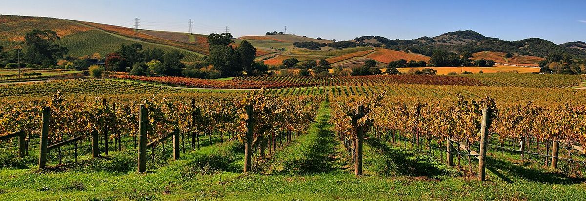

Estados Unidos
Estados Unidos es uno de los grandes productores de vino del mundo, con California a la cabeza y regiones destacadas en Oregón, Washington y Nueva York. Su sistema de denominaciones, las AVA, delimita zonas geográficas sin imponer variedades ni métodos de elaboración.

Historia
Los primeros colonos europeos encontraron en Norteamérica numerosas especies de vid silvestre, como Vitis labrusca o Vitis riparia, pero sus intentos de cultivar la vid europea, Vitis vinifera, en la costa este fracasaron durante siglos por las enfermedades, los inviernos rigurosos y la filoxera, un insecto originario de esa misma región. En el siglo XIX prosperó una viticultura basada en variedades autóctonas e híbridas, como la Catawba en Ohio o la Concord. En el oeste, los misioneros españoles llevaron la vid a California a finales del siglo XVIII con la llamada uva Misión, idéntica a la País chilena y a la Listán Prieto canaria. La fiebre del oro y la llegada de inmigrantes europeos impulsaron después el viñedo californiano, con figuras como el húngaro Agoston Haraszthy.
La Prohibición, vigente entre 1920 y 1933, hundió la industria: muchas bodegas cerraron y los viñedos se replantaron con uvas aptas para el transporte y la elaboración casera. La recuperación fue lenta. A partir de los años sesenta una nueva generación de productores, simbolizada por la bodega que Robert Mondavi fundó en Napa en 1966, apostó por los vinos varietales de calidad. En 1976, en la cata conocida como el Juicio de París, un Cabernet Sauvignon y un Chardonnay californianos fueron preferidos por jueces franceses frente a vinos de Burdeos y Borgoña, un episodio que dio gran notoriedad internacional al vino estadounidense. Desde entonces el viñedo se ha extendido por todo el país, aunque California sigue concentrando la gran mayoría de la producción.
Clima y suelos
La diversidad es enorme. La costa californiana tiene clima mediterráneo, con veranos secos y una influencia decisiva del Pacífico: la corriente fría de California genera nieblas y brisas que penetran por valles y aberturas de las sierras costeras y refrescan zonas que de otro modo serían muy cálidas. En el estado de Washington, la mayor parte del viñedo se sitúa al este de la cordillera de las Cascadas, en un clima semiárido, soleado y de inviernos fríos, donde el riego es imprescindible. Oregón, sobre todo en el valle del Willamette, ofrece un clima más fresco y húmedo, adecuado para la Pinot Noir. En el estado de Nueva York, los Finger Lakes deben su viticultura al efecto moderador de grandes lagos de origen glaciar. Los suelos varían desde los volcánicos y aluviales de Napa hasta los depósitos de las inundaciones glaciares de Missoula en el noroeste o las pizarras y esquistos del norte del estado de Nueva York.
Variedades y estilos
Estados Unidos se ha construido sobre los vinos varietales, que llevan el nombre de la uva en la etiqueta. El Cabernet Sauvignon de Napa y el Chardonnay californiano son sus estilos más reconocibles, junto al Pinot Noir de Sonoma, Santa Barbara y Oregón. El Zinfandel, genéticamente idéntico al Primitivo italiano, es casi una seña de identidad californiana, a menudo acompañado de Petite Sirah en viñas viejas. Washington destaca por su Merlot, Cabernet Sauvignon, Syrah y Riesling, y los Finger Lakes por sus Riesling. Existen también mezclas de tipo bordelés, a veces denominadas Meritage, vinos de variedades del Ródano y espumosos de método tradicional.
Normativa: el sistema de AVA
Las denominaciones de origen estadounidenses se llaman American Viticultural Areas (AVA). El sistema se creó a finales de los años setenta y la primera AVA, Augusta, en Misuri, se reconoció en 1980; hoy lo administra la Alcohol and Tobacco Tax and Trade Bureau (TTB), una agencia federal. A diferencia de las denominaciones europeas, una AVA solo delimita una zona con características geográficas propias: no regula variedades, rendimientos, crianza ni métodos de elaboración. Muchas AVA se superponen o se encajan unas en otras, como Oakville dentro de Napa Valley. Existen además denominaciones políticas, como el nombre de un estado o un condado.
Las normas federales de etiquetado fijan mínimos: un vino con nombre de AVA debe proceder al menos en un 85 % de uvas de esa zona, uno con nombre de estado o condado en un 75 %, y un varietal debe contener como mínimo un 75 % de la variedad indicada. Algunos estados son más exigentes: Oregón, por ejemplo, exige un porcentaje mayor para la mayoría de los varietales.
Venta por estados
Tras el fin de la Prohibición, la Enmienda XXI de la Constitución dejó en manos de cada estado la regulación de la venta de bebidas alcohólicas. De ahí nació el llamado sistema de tres niveles, que separa productor, distribuidor mayorista y minorista, aunque cada estado lo aplica a su manera. Las reglas sobre el envío directo de vino de la bodega al consumidor, la venta en supermercados o los monopolios estatales de distribución varían mucho de un estado a otro, e incluso existen condados que mantienen restricciones locales a la venta de alcohol.
Regiones y denominaciones
Napa Valley
AVA · Valle situado al norte de la bahía de San Francisco y la región vitícola más célebre de Estados Unidos, conocida sobre todo por sus Cabernet Sauvignon. Fue la primera AVA reconocida en California.
Sonoma
Condado con varias AVA · El condado de Sonoma, entre el Pacífico y Napa, reúne una gran variedad de climas y AVA, desde las zonas frescas de Russian River Valley y Sonoma Coast hasta los valles cálidos de Dry Creek y Alexander Valley.
Paso Robles
AVA · Amplia AVA de la Costa Central de California, a medio camino entre San Francisco y Los Ángeles, conocida por su Zinfandel, sus mezclas de variedades del Ródano y sus Cabernet Sauvignon.
Santa Barbara
Condado con varias AVA · El condado de Santa Barbara, en el extremo sur de la Costa Central de California, debe su frescor a valles orientados de este a oeste que canalizan la niebla del Pacífico. Es una referencia para el Pinot Noir y el Chardonnay californianos.
Willamette Valley
AVA · Valle del noroeste de Oregón, entre la cordillera costera y las Cascadas, que se ha convertido en la gran referencia estadounidense del Pinot Noir de clima fresco.
Columbia Valley
AVA · Gran AVA del estado de Washington, con una pequeña parte en Oregón, situada al este de las Cascadas en un clima semiárido de veranos soleados. Concentra la mayor parte del viñedo de Washington.
Finger Lakes
AVA · Región del oeste del estado de Nueva York, en torno a varios lagos alargados de origen glaciar, conocida sobre todo por sus Riesling de clima frío.
Russian River Valley
AVA (dentro del condado de Sonoma) · AVA del condado de Sonoma, en California, refrescada por las nieblas que entran desde el Pacífico. Es una de las zonas de referencia de Estados Unidos para la Pinot Noir y la Chardonnay, y conserva también viejas viñas de Zinfandel.
Los Carneros
AVA (compartida entre los condados de Napa y Sonoma) · AVA situada en el extremo sur de los valles de Napa y Sonoma, junto a la bahía de San Pablo. Fresca y ventosa, es una zona clásica de Pinot Noir, Chardonnay y vinos base para espumosos.
Santa Cruz Mountains
AVA · AVA montañosa al sur de San Francisco, entre el Pacífico y la bahía, definida por la altitud de sus viñedos. Pequeña y dispersa entre bosques, es una de las cunas históricas del vino fino californiano, con Cabernet Sauvignon, Pinot Noir y Chardonnay de gran longevidad.
Lodi
AVA, con siete sub-AVA · AVA del norte del Valle Central de California, entre Sacramento y Stockton, refrescada por las brisas del delta. Es una de las zonas más productivas del estado y la gran reserva de viñas viejas de Zinfandel.
Sta. Rita Hills
AVA (dentro de Santa Ynez Valley, condado de Santa Bárbara) · AVA del oeste del valle de Santa Ynez, en el condado de Santa Bárbara, abierta a los vientos y nieblas del Pacífico. Es una de las zonas más frescas de California y un referente para la Pinot Noir y la Chardonnay.
Walla Walla Valley
AVA (compartida entre Washington y Oregón, dentro de Columbia Valley) · AVA del sureste del estado de Washington que se extiende también por el noreste de Oregón. De clima continental seco, es conocida por sus tintos de Cabernet Sauvignon, Merlot y Syrah y por los suelos de cantos rodados de The Rocks District.